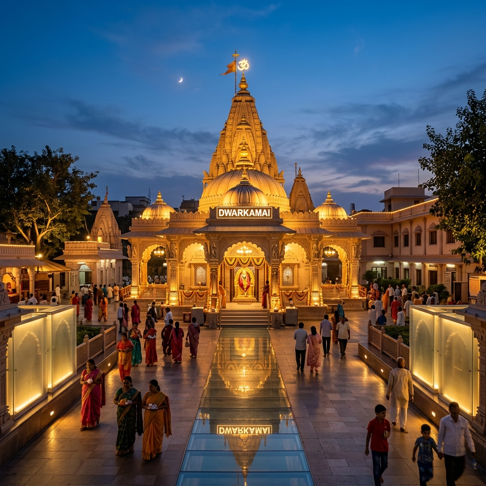

About Temple
Visiting Shirdi Sai Baba Temple feels like entering a place where faith is simple and deeply emotional. Unlike many temples that feel formal, Shirdi has a very personal connection with devotees. People from all backgrounds come here with different hopes – some for peace, some for solutions, and some just to sit quietly in the presence of Sai Baba. The atmosphere is not silent like remote temples, but it carries a calm energy even within the crowd. Standing in front of the Samadhi gives a feeling of trust and comfort, as if your worries are being heard.
Calm Energy
Deeply Personal
Samadhi Darshan
Trust & Comfort

History & Significance

Shirdi is the place where Sai Baba lived for most of his life and guided people with simple teachings of faith (Shraddha) and patience (Saburi). He did not follow one religion but taught unity, compassion, and humanity. After his samadhi in 1918, the temple was built over it, and it gradually became one of the most important pilgrimage sites in India. The temple complex includes Dwarkamai (the old mosque where he lived) and Chavadi, preserving the simple lifestyle he led.
Est. 1918
Samadhi of Sai Baba
Key Teachings
Shraddha & Saburi
What Makes It Unique
Discover the unique factors that set Shirdi apart from other shrines.


Travel Guide
Convenient ways to reach the temple from different parts of Maharashtra.
Option 1: Direct Car/Cab
Drive via Samruddhi Mahamarg or NH 160. Shirdi is located around 240 km from Mumbai and 180 km from Pune, offering well-paved roads and beautiful scenic routes.
Travel Duration: 4 - 5 Hours ApproxOption 2: Trains & Flights
Sainagar Shirdi (SNSI) station connects directly to major cities across India. Shirdi International Airport (SAG) offers direct flights from Mumbai, Delhi, Hyderabad, Bengaluru, and more.
Flight/Train: Varies by SourceOption 3: ST/Private Buses
Frequent state transport (MSRTC) and private luxury sleeper buses run daily from Mumbai, Pune, Nashik, and other major towns in Maharashtra directly to Shirdi.
Essential Information
Important details regarding timings, queues, and ideal visiting slots.
Timings & Aarti
Open from 4:00 AM to 11:00 PM. Highly famous for the four daily Aartis: Kakad (morning), Madhyan (noon), Dhoop (evening), and Shej (night).
Entry & Booking
General Darshan is free. Paid VIP/Quick Darshan passes are available online via the official trust website to save waiting time.
Best Time
October to March is ideal for pleasant weather. Thursdays and festivals like Guru Purnima and Vijayadashami are extremely crowded.
Location & Coordinates
Shirdi, Rahata Taluka, Ahmednagar District, Maharashtra 423109